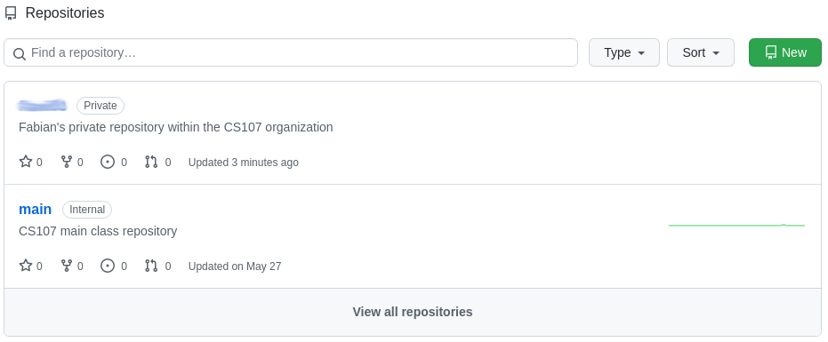
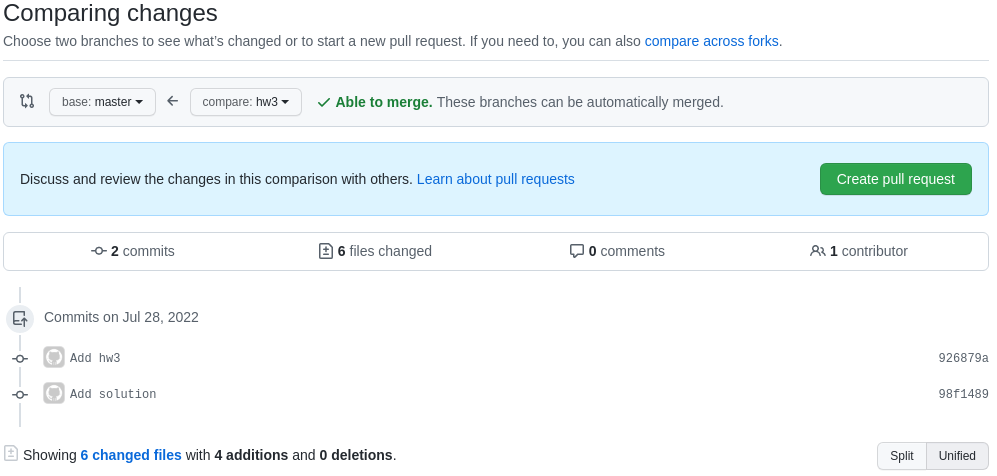
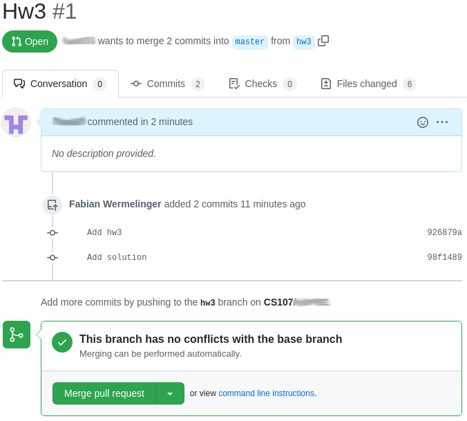
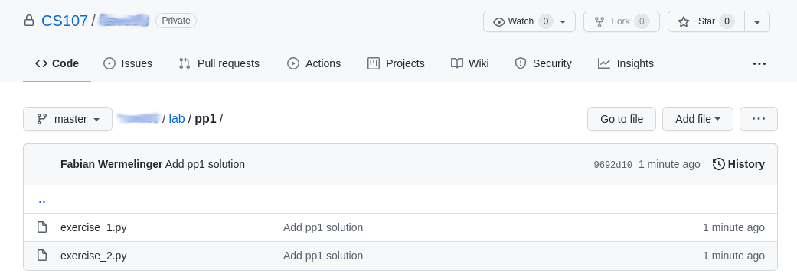
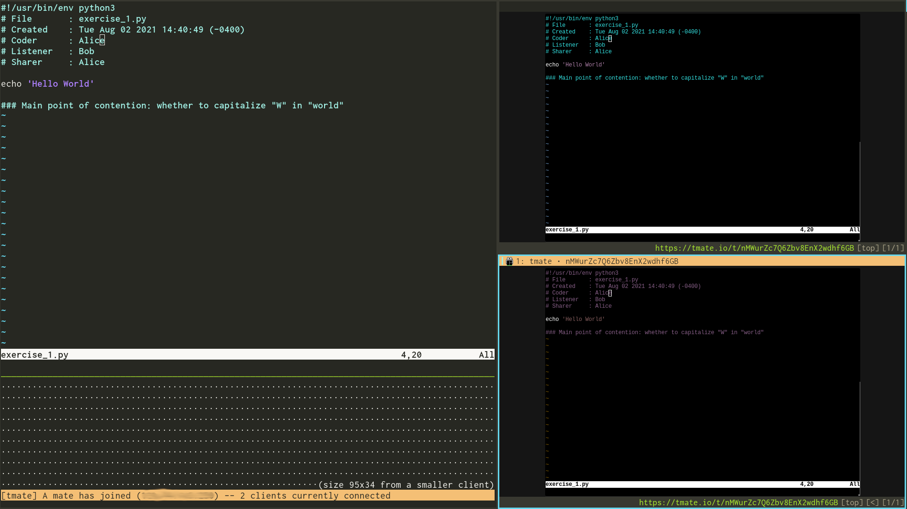

Tutorials
¡This is a draft 08-30-2023!
How to Setup your Private Class Repository
All of your work in CS107/AC207 will be committed in your private class
gitrepository hosted in the CS107 organization at https://code.harvard.edu/CS107. (The class project will be hosted in another repository in the same organization, see Milestone 1A for this separate task.)
This tutorial walks you through the steps to create your private class
repository. If you have already created git repositories on GitHub, then
there is nothing new to learn in this tutorial and you should be familiar with
the process already.
A note on https://code.harvard.edu/: this is an instance of a GitHub Enterprise edition hosted by Harvard University. The user interface is identical to the public GitHub site. The main difference is that https://code.harvard.edu/ is owned by Harvard University, whereas GitHub belongs to Microsoft which gives rise to security concerns regarding data belonging to classes held at Harvard University.
Steps to Setup Your Private Class Repository
- Obtain your Harvard NetID
- Send an email to
cs107-staff@g.harvard.edu(using your.harvard.eduemail) to request access to the CS107 organization. Include your NetID from step 1 in the body of the email and choose an appropriate subject line. - Once added to the organization, navigate to https://code.harvard.edu/CS107 (login if necessary) and click the green "New" button to add a new repository.
- Your repository must be named after your NetID. You can add an optional description if you like. Make sure the private radio button is checked and click "Create repository". You do not need to check any other options.
This is all you have to do for now. In the first homework we will focus on how to setup your new repository such that you can work with it from your laptop (you can skip the landing page after you have created the repository). When you navigate back to https://code.harvard.edu/CS107 you should see something similar to this:

- The blurred repository is your private class repository that was the focus of this tutorial.
- The
mainrepository is the main CS107/AC207 class repository which is used to distribute all of the class material during the semester. Any updates to this repository will be broadcast via email message such that you will not miss out on new material. In the first homework we will set this repository as an upstream such that you can conveniently unpack class material into your private repository.
Note: private repositories are only visible to you within the organization. Please do not create other repositories in the https://code.harvard.edu/CS107 organization. You have your own user account on https://code.harvard.edu/ just like you have on GitHub or other providers. Your user account requires your Harvard login credentials and is a good alternative to hosts like GitHub. Feel free to create as many repositories in your user account as you like.
Add an SSH Key to Your Account
In order to access content on https://code.harvard.edu using Git you need to
setup an SSH key. Check if you
already have the file ~/.ssh/id_rsa.pub (assuming RSA). If you do not have
such a file you can create one with
ssh-keygen -t rsa -b 4096
Choose the default location by just hitting enter. You may enter a password for
the key or just hit enter to go without password. If go with password you will
have to enter it every time you use the key. To upload the public key to your
Harvard GitHub account, click on your icon in the
top right corner on your https://code.harvard.edu page, then click on
"Settings" and then "SSH and GPG keys" in the left panel. Alternatively use this
link https://code.harvard.edu/settings/keys. Click on the green "New SSH key"
button in the top right corner and give your new key a title (e.g. the name of
your laptop). In the key field paste the contents of your public key found in
~/.ssh/id_rsa.pub. Use for example
cat ~/.ssh/id_rsa.pub
and copy paste the output into the "Key" field on your GitHub page. You are now
able to access any repositories on https://code.harvard.edu with corresponding
permissions. Never share your private key ~/.ssh/id_rsa with anybody.
Note: do not create a key in the class Docker container since the key will be lost when you exit the container. For security reasons, sensitive keys like this should not be put in containers.
Homework Workflow
The following are the basic rules we apply for homework submissions:
- Naming convention for homework directories: your private repository
should contain one
homeworkdirectory on the repository root withhwXsub-directories for each homework assignment. TheXinhwXis to be replaced with the assignment number. For examplehw1,hw2and so on. - Which files will be considered for grading: within the sub-directory
hwX, place the assignment files that you want us to grade in a directory calledsubmission. We will only grade data in these directories. - Pull request (PR): your homework assignments must be completed on
gitbranches calledhwX, whereXis again to be substituted with the assignment number. Your homeworkXsubmission requires an open pull request to merge thehwXbranch into yourmain(or deprecatedmaster) branch for full points (both branches are inside your private class repository in the CS107 organization). Some implications of this:- Solving homework on the
mainormasterbranch is always wrong. - For each homework submission you need to issue one open PR. Merging an open PR before the teaching staff has reviewed and graded your work will make the PR disappear.
- Only files inside
submissionin PRXwill contribute to yourhwXgrade (see next item).
- Solving homework on the
- Gradescope: your homework will be graded on the Gradescope
platform
that has been setup and linked to the class canvas page. The platform does
currently not support submission directly via your Git repository. You
therefore have to create a
ziparchive of yoursubmissiondirectory created in step 2 above and upload the archive on Gradescope. It is important that you zip-up the directory and not individual files inside. You can use the commandzip -r submission.zip submission/, where the-roption means add files recursively,submission.zipis the name of zip archive andsubmissionis your homework submission directory from step 2 containing your solution. This assumes you are inhomework/hwXinside your Git repository.
Points will be lost if any of these requirements are violated.
The teaching staff will review the open PR for each homework and grade your work accordingly. Grades will be released on canvas and feedback is provided through the Gradescope platform. Once you have received the grade and feedback, your open PR for homework
Xcan be merged into yourmainormasterbranch if there are no more pending issues. After the PR is closed, you may delete thehwXbranch in your repository. This concludes a homework submission.
Example Homework Workflow
This example is intended to help you internalize the three basic rules described above. Each homework awards 10 points by performing these steps correctly.
Note: Specific instructions provided in each homework assignment may override the following basic approach.
Suppose we want to work on homework assignment 3, which consists of 4 problems.
Step 1: Branch Off
The ease of branching is the main strength of git. Branches allow you to be
destructive without affecting production code or data. The reason we solve
homeworks on individual branches is to help you develop a feel for this
protection and to materialize the required steps to create branches. Branches
will provide you true comfort when working on real projects outside of this
class.
-
Make sure your
masterormainbranch is in the state you want your new branch to be based on. If you need to synchronize with your default remote branch you can typegit pull -
The next step consists of creating and switching to a new branch that is based off the current branch. For this you can use
git checkout -b hw3which is how you did it before
git 2.23.0. Since thecheckoutcommand is ambiguous, the preferred way for more recent versions ofgitisgit switch -c hw3
You are now on a new branch called hw3 as required. You will need to issue a
pull request into main or master from this branch such that your homework
will be graded. You can create the PR now (see below) or once you are done with
solving hw3, it does not matter to git. (Pull requests are not something
designed by git itself, but rather by platforms like GitHub or GitLab.)
Note: you will lose 5 points if you are not solving your
hwX(in this example it ishw3) on a branch namedhwX. You are of course free to create additional branches besideshwXif suitable.
Step 2: Solving the Homework
The files the teaching staff will consider for grading have to be located in the
directory homework/hw3/submission. You are free to put other files below
homework/hw3 that might be useful when you revisit your work sometime later.
The problem sheet might be one of those files. Class handouts are distributed
in the main class repository. You can
manually create these directories and copy the files you want into your hw3
directory using, for example:
mkdir -p homework/hw3/submission
cp <path to main class repo>/homework/hw3/hw3.pdf homework/hw3
Alternatively you can use git by configuring the main class repository as
another remote in your local git repository (see homework 1). In this case
you can checkout all the distributed homework files at once with
git checkout class/master -- homework/hw3
assuming that the remote points to https://code.harvard.edu/CS107/main and is
locally named "class". You may need to update your refs with git fetch --all
before you invoke the checkout command above.
The homework sheet will state what files have to be submitted. For this hw3
we assume they are P1.py, P2.py, P3.py and P4.py, one for each of the
four problems.
These files should run and return the required output. They have to be submitted inside the
homework/hw3/submissiondirectory.
You should commit your work often in logical chunks. Your commits are to be
done on the hw3 branch, of course. The following are a few commands that
might be helpful:
- Use
git statusoften to check your local state. - Use the
git add <file_name>command to stage files you have changed for a commit. - Use
git commit -m <commit message>to create a commit with an appropriate commit message. - Use
git stashto temporarily stash modified files (similar to a commit but it is not written to the history). Later on usegit stash listto list all your stashed changes if you have usedgit stashmultiple times. You can check what will change when you apply the stash withgit stash show -pand apply the stashed changes withgit stash apply(orgit stash popwhich also removes the stash from the list). Note that these commands work on the first stash object in the liststash@{0}if you do not explicitly specify the stash object you want to apply. - Use
git pushto push local branch/commits to your remote repository. - Use
git restore <file_path>to undo changes to a single file. - Use
git revert <commit_SHA>to undo the changes in a specific commit.
Make sure you have committed your solution you want to submit inside the
homework/hw3/submissiondirectory with the required file names.
Step 3: Create a Pull Request
If you have local commits not pushed to the remote issue the git push command.
You are now ready to issue a pull request (you could also have done this step at
the very beginning of solving this homework, this is up to you).
The goal is to merge the hw3 branch into your main or master branch
eventually. The teaching staff must review and grade your work first, however.
There are two ways to accomplish a PR on GitHub:
- Through the web browser at
https://code.harvard.edu/CS107/<your NetID>. - Through the GitHub command line client. This method is helpful if you get distracted from the context switch that is associated with the first method.
Note: you will lose 2 points if you do not create a PR.
Disclaimer: you would not typically issue a PR for projects you are the sole
contributor. Pull requests are typical for large projects at a company in which
someone else will review your code before you can merge your code to the
production branch. We want you to become accustomed to this type of workflow. It
is a good idea to always use separate development branches. You should never
commit straight to your main or master branches until the changes have
thoroughly been tested.
Creating a Web Pull Request
- Navigate to your
https://code.harvard.edu/CS107/<your NetID>private class repository and click on the "Pull Requests" tab in the top left part of the window. - Click on the "New pull request" button
- Choose your
mainormasterbranch as the base (the one you want to merge into) and yourhw3branch as the one you want to compare to. - This should automatically reload the page and show the changes that will be applied. Click on the "Create pull request" button. 
- You can optionally add comments to this pull request if you desire. Click on the "Create pull request" button once more to create and open the pull request.
- The pull request is now open. You can even push more commits to the
hw3branch if you need to correct something (before the deadline has passed of course). Therefore, you could also create the PR at the beginning of the homework. 
Note: DO NOT click on the button that says "Merge pull request" until you have received your grade and feedback for that homework. You will lose 3 points if you prematurely merge your PR.
Step 4: Submit on Gradescope
Your submission is now ready to be submitted for grading on
Gradescope.
Simply create a zip archive of your submission directory you have created in
your Git repository, e.g. submission.zip, and upload it to Gradescope by
following the link above. You can use the command zip -r submission.zip
submission/, where the -r option means add files recursively,
submission.zip is the name of zip archive and submission is your homework
submission directory.
Since you track the change history of your work in
Git, you should not add *.zip files to your Git history. You can simply
ignore such archives by adding the line
*.zip
to your .gitignore file in your repository root.
Pair-programming Workflow
Exercises performed during pair-programming sections should be put under version control similar to homework assignments (see the Homework Workflow section above).
You must not branch off and create a pull-request for pair-programming exercises. Just add and commit your work on the
mainormasterbranch and push them to your repository (make sure you are on the correct branch before you commit!).
The following are the basic rules we apply for pair-programming submissions:
- Your private repository should contain a directory named
labwith sub-directories for each session. The sub-directories should be namedppXwhereXis the session number. - Within the sub-directory
ppX, place the exercise files that you completed during the pair-programming sections. The exercises must have the nameexercise_Y.extwhereYcorresponds to the exercise number andextis the proper extension (.py,.sh,.c,.cpp) depending on the exercise. Here is an example how it may look like: 
The pair-programming exercises will be graded for completeness and help us ensure you are on the right track. You may lose points for the completeness part if you do not follow these two basic rules.
Protocol
In class we are focusing on command line tools for the development of software projects in computational science. It is important that you get familiar with a small selection of such tools and integrate them in your development process. The pair-programming sections aim at combining some of these tools together to provide you with hands-on experience while developing software. The key is the "pair" in pair-programming. The exchange of knowledge between team mates in these pair-programming sections is essential for learning said tools or learning something new you did not know before.
The pair-programming works by using a tool called tmate
which is based on the tmux terminal
multiplexer. It allows for easy sharing of
a command line session or a specific instance of a program in read/write and
read-only modes via ssh or web browsers. Check out this blog
post for
more. Text file editing will be performed in any text editor that supports a
text-based user interface (TUI). Recommended choices are vim or emacs.
If you are mainly working on a Windows operating system, you should install the
Windows Subsystem for
Linux. A small guide for
doing so can be found here. See the
How to Launch tmate section below for
the steps to launch tmate on your laptop.
Note:
tmateis perfect for any coding related communication. For example, debugging, work on the project and of course pair-programming. There is no audio channel integrated intmate. If students are remote, a zoom session or similar must be established for oral communication.
The exercises in the pair-programming sections are necessarily collaborative. Each member of the group will turn in the same script. Adhere to the following workflow when solving pair-programming exercises:
- For each exercise (or sub-exercise for big problems), there will be one sharer, one coder, and one listener. This assumes a group size of 3. If the group only has two people, then either one of you can take the sharer's role.
- The sharer will start each coding session and document interactions including points of contention and challenges. The coder will be in charge of writing the code. The listener will make suggestions and may offer tweaks from time to time.
- The sharer starts a new
tmatesession and invites the other team mates to join the session. Ideally you want to start the session inside the directory of the current pair-programming exercise in yourgitrepository. You may share a read/write link either throughsshor a web browser.Note: the sharer allows the others access to her/his computer. Any abusive behavior that may cause harm on the sharer's system will not be tolerated and are forwarded to the dean's office.
- After the team mates have accepted the invite, they will be able to share the terminal instance and can create new files or execute Python together.
- The team should discuss a strategy on how to approach the exercise.
- The coder should start writing some code with input from the other two team members.
- Before each section that you work on, place a comment indicating which team
member worked on that section. For example, a
bashscript could look like this:
#!/usr/bin/env bash
# File : exercise_1.sh
# Created : Sat Aug 07 2021 04:58:49 PM (-0400)
# Coder : Alice
# Listener : Bob
# Sharer : Alice
echo 'Hello World'
### Main point of contention: whether to capitalize "W" in "world"
- For small exercises, each team member can play a single role once.
- For large exercises, the team members may rotate roles. The exercise will make it clear when you should rotate.
- At the end of the exercise, the developed code is inside the sharer's
gitrepository that can readily be committed. Links to download these files can be shared with the other team mates such that they can update their repositories as well. Note that the exercise code will contain comments pertaining to who worked on which section.
How to launch tmate
Disclaimer:
tmateis a tool to share a terminal session and interact with other people. If you host a session, it means the instance runs on your local computer and you are in control of how much permissions you want assign to your mates. There are 2 ways to share a session:
- read-only: mates that connect to your session can only read data (this is safe provided the data you expose is safe).
- read-write: mates that connect to your session can read and write data. This is unsafe if you share a session with an mistrusted person.
Recommended Workflow
- Launch the CS107/AC207 docker
container with the working directory mounted (see the provided
run_cs107_docker.shlaunch script) - Start
tmateinside the docker container
Wrapping tmate in a docker container provides another layer of security. You
can also install tmate using your distribution package manager (on Linux or
homebrew on MacOSX) and skip step 1 if you wish not to use a
container.
Steps:
- Assume Docker is installed and we have pulled the CS107/AC207 docker
image. You can install the
run_cs107_docker.shlaunch script in yourPATHfor convenience (e.g.~/bin/run_cs107_docker.shand add this directory to yourPATHenvironment variable). Be sure that therun_cs107_docker.shscript is executable. See thechmodcommand to change the permissions of the script. - Assume you want to work on the PP1
exercise and you are
in the
labdirectory of your private Git repo andpp1exists. Launch the docker container and mount thepp1directory in your repository:
$ run_cs107_docker.sh pp1/
root@0a076feb425f:~#
- You are now inside a running docker container. Note that the hostname
0a076feb425fis arbitrary and yours will differ. Launchtmate(it is already installed in the container):
root@0a076feb425f:~# tmate
Tip: if you wish to use tmate only for remote access, run: tmate -F
To see the following messages again, run in a tmate session: tmate show-messages
Press <q> or <ctrl-c> to continue
---------------------------------------------------------------------
Connecting to ssh.tmate.io...
Note: clear your terminal before sharing readonly access
web session read only: https://tmate.io/t/ro-qNRV5QRVWkW3qr55sfATkBegr
ssh session read only: ssh ro-qNRV5QRVWkW3qr55sfATkBegr@nyc1.tmate.io
web session: https://tmate.io/t/nMWurZc7Q6Zbv8EnX2wdhf6GB
ssh session: ssh nMWurZc7Q6Zbv8EnX2wdhf6GB@nyc1.tmate.io
- The
tmateinstance is now running and you can choose between 4 possible links to share with your mates: 2 that can be run in your web browser and another 2 to be used withsshin your terminal (either read-only and read/write). Choose the appropriate link you want to share with your pair-programming mates. - If you press
qorctrl-cyou are dropped back to the shell. The server will tell you whenever mates join. You can print the links again withtmate show-messages(be careful when you are sharing screens on zoom for example). - Note that pressing
ctrl-dor typingexitin the shell will close the active terminal and if only one is left, also the activetmatesession. This will close the connections to all connected clients.
You can now work together on the exercise. For example:
root@0a076feb425f:~# vim exercise_1.py
- The image below shows a terminal session (left) and two mates connected in a web browser window (right): 
Note: We run
tmatewithrootin the docker container. Do not runtmateas root in any other situation (even here we could create a regular user) and be careful with password-lesssudo(avoid password-lesssudoin the first place).
In order to use ssh you need to setup an ssh key if you have not done so
already. If you do not have such a key, you may create one by running
ssh-keygen -t rsa -b 4096
If you are not dropped into a shell after you execute tmate it may be because
you are using a shell different than zsh. Install zsh on your system using
your package manager and run tmate like this
SHELL=/bin/zsh tmate